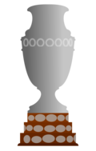

| Competição | Vezes | Ano |
|---|---|---|
| Copa do Mundo | 5 | 1958, 1962, 1970, 1994, 2002 |
| Competição | Vezes | Ano |
|---|---|---|
| Copa das Confederações | 4 | 1997, 2005, 2009, 2013 |
| Campeonato Pan-Americano | 2 | 1952, 1956 |
| Competição | Vezes | Ano |
|---|---|---|
|  Copa América | 9 | 1919, 1922, 1949, 1989, 1997, 1999, 2004, 2007, 2019 |
| Competição | Vezes | Ano |
|---|---|---|
| 2 | 2016, 2020 | |
| 3 | 1984, 1988, 2012 | |
| 2 | 1996, 2008 |